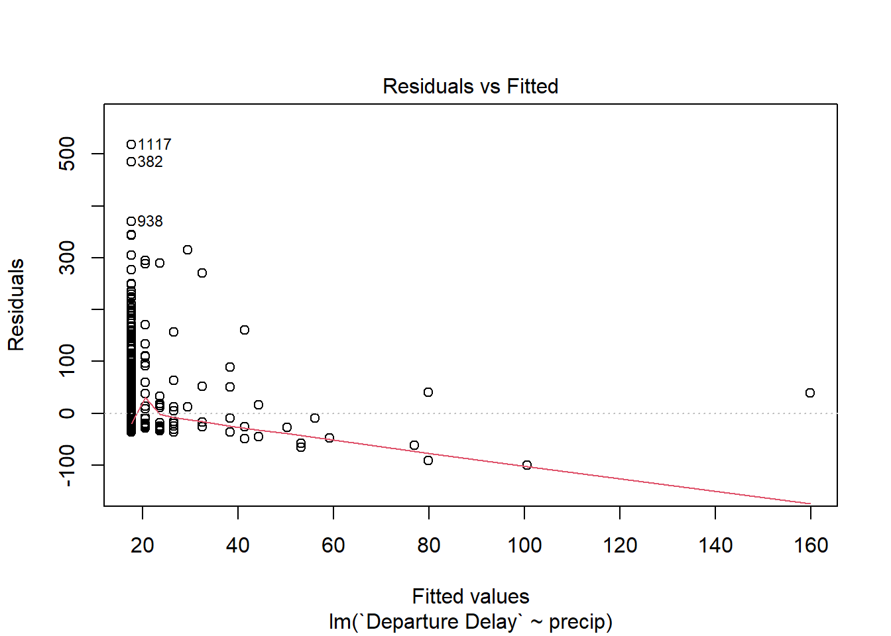

Since regression analysis is such a fundamental component of inferences, I thought it would be a good idea to try to work through a few more examples to give you some more practice.
For this we will use some data on flights into and out of Newark (EWR), JFK, and La Guardia airports in NYC metropolitan area.
summary( flights)
year month day dep_time sched_dep_time
Min. :2013 Min. : 1.000 Min. : 1.00 Min. : 1 Min. : 106
1st Qu.:2013 1st Qu.: 4.000 1st Qu.: 8.00 1st Qu.: 907 1st Qu.: 906
Median :2013 Median : 7.000 Median :16.00 Median :1401 Median :1359
Mean :2013 Mean : 6.549 Mean :15.71 Mean :1349 Mean :1344
3rd Qu.:2013 3rd Qu.:10.000 3rd Qu.:23.00 3rd Qu.:1744 3rd Qu.:1729
Max. :2013 Max. :12.000 Max. :31.00 Max. :2400 Max. :2359
NA's :8255
dep_delay arr_time sched_arr_time arr_delay
Min. : -43.00 Min. : 1 Min. : 1 Min. : -86.000
1st Qu.: -5.00 1st Qu.:1104 1st Qu.:1124 1st Qu.: -17.000
Median : -2.00 Median :1535 Median :1556 Median : -5.000
Mean : 12.64 Mean :1502 Mean :1536 Mean : 6.895
3rd Qu.: 11.00 3rd Qu.:1940 3rd Qu.:1945 3rd Qu.: 14.000
Max. :1301.00 Max. :2400 Max. :2359 Max. :1272.000
NA's :8255 NA's :8713 NA's :9430
carrier flight tailnum origin
Length:336776 Min. : 1 Length:336776 Length:336776
Class :character 1st Qu.: 553 Class :character Class :character
Mode :character Median :1496 Mode :character Mode :character
Mean :1972
3rd Qu.:3465
Max. :8500
dest air_time distance hour
Length:336776 Min. : 20.0 Min. : 17 Min. : 1.00
Class :character 1st Qu.: 82.0 1st Qu.: 502 1st Qu.: 9.00
Mode :character Median :129.0 Median : 872 Median :13.00
Mean :150.7 Mean :1040 Mean :13.18
3rd Qu.:192.0 3rd Qu.:1389 3rd Qu.:17.00
Max. :695.0 Max. :4983 Max. :23.00
NA's :9430
minute time_hour
Min. : 0.00 Min. :2013-01-01 05:00:00.00
1st Qu.: 8.00 1st Qu.:2013-04-04 13:00:00.00
Median :29.00 Median :2013-07-03 10:00:00.00
Mean :26.23 Mean :2013-07-03 05:22:54.64
3rd Qu.:44.00 3rd Qu.:2013-10-01 07:00:00.00
Max. :59.00 Max. :2013-12-31 23:00:00.00
We also have some data related to local weather conditions.
summary( weather )
origin year month day
Length:26115 Min. :2013 Min. : 1.000 Min. : 1.00
Class :character 1st Qu.:2013 1st Qu.: 4.000 1st Qu.: 8.00
Mode :character Median :2013 Median : 7.000 Median :16.00
Mean :2013 Mean : 6.504 Mean :15.68
3rd Qu.:2013 3rd Qu.: 9.000 3rd Qu.:23.00
Max. :2013 Max. :12.000 Max. :31.00
hour temp dewp humid
Min. : 0.00 Min. : 10.94 Min. :-9.94 Min. : 12.74
1st Qu.: 6.00 1st Qu.: 39.92 1st Qu.:26.06 1st Qu.: 47.05
Median :11.00 Median : 55.40 Median :42.08 Median : 61.79
Mean :11.49 Mean : 55.26 Mean :41.44 Mean : 62.53
3rd Qu.:17.00 3rd Qu.: 69.98 3rd Qu.:57.92 3rd Qu.: 78.79
Max. :23.00 Max. :100.04 Max. :78.08 Max. :100.00
NA's :1 NA's :1 NA's :1
wind_dir wind_speed wind_gust precip
Min. : 0.0 Min. : 0.000 Min. :16.11 Min. :0.000000
1st Qu.:120.0 1st Qu.: 6.905 1st Qu.:20.71 1st Qu.:0.000000
Median :220.0 Median : 10.357 Median :24.17 Median :0.000000
Mean :199.8 Mean : 10.518 Mean :25.49 Mean :0.004469
3rd Qu.:290.0 3rd Qu.: 13.809 3rd Qu.:28.77 3rd Qu.:0.000000
Max. :360.0 Max. :1048.361 Max. :66.75 Max. :1.210000
NA's :460 NA's :4 NA's :20778
pressure visib time_hour
Min. : 983.8 Min. : 0.000 Min. :2013-01-01 01:00:00.0
1st Qu.:1012.9 1st Qu.:10.000 1st Qu.:2013-04-01 21:30:00.0
Median :1017.6 Median :10.000 Median :2013-07-01 14:00:00.0
Mean :1017.9 Mean : 9.255 Mean :2013-07-01 18:26:37.7
3rd Qu.:1023.0 3rd Qu.:10.000 3rd Qu.:2013-09-30 13:00:00.0
Max. :1042.1 Max. :10.000 Max. :2013-12-30 18:00:00.0
NA's :2729
I’m going to make a synthetic data set consisting of flights out of JFK for the ExpressJet airlines. Since the weather data is on the hour, I also make a synthetic varible Month.Day.Hour so that I can join the weather data to this one.
Departure Delay Departure Time temp dewp
Min. :-19.00 Min. : 559 Min. :12.02 Min. :-7.96
1st Qu.: -6.00 1st Qu.: 959 1st Qu.:42.08 1st Qu.:26.96
Median : -2.00 Median :1355 Median :55.94 Median :44.06
Mean : 18.53 Mean :1236 Mean :55.92 Mean :42.44
3rd Qu.: 16.00 3rd Qu.:1900 3rd Qu.:69.98 3rd Qu.:59.00
Max. :536.00 Max. :1945 Max. :96.98 Max. :78.08
NA's :81
humid wind_dir wind_speed wind_gust
Min. : 18.19 Min. : 0.0 Min. : 0.000 Min. :16.11
1st Qu.: 46.13 1st Qu.:130.0 1st Qu.: 8.055 1st Qu.:23.02
Median : 64.29 Median :210.0 Median :11.508 Median :26.47
Mean : 63.49 Mean :203.5 Mean :11.865 Mean :27.57
3rd Qu.: 80.75 3rd Qu.:290.0 3rd Qu.:14.960 3rd Qu.:31.07
Max. :100.00 Max. :360.0 Max. :33.373 Max. :46.03
NA's :12 NA's :2 NA's :1148
precip pressure visib
Min. :0.000000 Min. : 985.7 Min. : 0.00
1st Qu.:0.000000 1st Qu.:1013.0 1st Qu.:10.00
Median :0.000000 Median :1017.8 Median :10.00
Mean :0.003407 Mean :1018.1 Mean : 9.17
3rd Qu.:0.000000 3rd Qu.:1023.2 3rd Qu.:10.00
Max. :0.480000 Max. :1041.9 Max. :10.00
NA's :135
Activity
What features of this data set may impact the departure delay for flights coming out of JFK on ExpressJet Airlines?
#Wind Speed (because the residuals aren't normal, we fail to reject the null hypothesis that there isn't a relationship between wind speed and departure delay)wspd <-lm(`Departure Delay`~ wind_speed, data = df)summary(wspd) #p = 0.01, r^2 = 0.003, F = 6, DF= 1, 1321
Call:
lm(formula = `Departure Delay` ~ wind_speed, data = df)
Residuals:
Min 1Q Median 3Q Max
-43.64 -25.03 -19.65 -2.84 521.42
Coefficients:
Estimate Std. Error t value Pr(>|t|)
(Intercept) 10.7333 3.5522 3.022 0.00256 **
wind_speed 0.6677 0.2726 2.449 0.01445 *
---
Signif. codes: 0 '***' 0.001 '**' 0.01 '*' 0.05 '.' 0.1 ' ' 1
Residual standard error: 55.99 on 1321 degrees of freedom
(83 observations deleted due to missingness)
Multiple R-squared: 0.00452, Adjusted R-squared: 0.003767
F-statistic: 5.998 on 1 and 1321 DF, p-value: 0.01445
Call:
lm(formula = `Departure Delay` ~ wind_speed_adj, data = df)
Residuals:
Min 1Q Median 3Q Max
-40.79 -25.25 -20.22 -2.52 520.56
Coefficients:
Estimate Std. Error t value Pr(>|t|)
(Intercept) 7.497 5.520 1.358 0.1746
wind_speed_adj 32.803 15.698 2.090 0.0368 *
---
Signif. codes: 0 '***' 0.001 '**' 0.01 '*' 0.05 '.' 0.1 ' ' 1
Residual standard error: 56.03 on 1321 degrees of freedom
(83 observations deleted due to missingness)
Multiple R-squared: 0.003295, Adjusted R-squared: 0.00254
F-statistic: 4.367 on 1 and 1321 DF, p-value: 0.03684
plot(wspd_adj, which =1) #residuals still aren't normal
ws <-test_boxcox(df$wind_speed)df$wspd_lamb <- ((df$wind_speed ^0.76) -1) /0.76wspd_lam <-lm(`Departure Delay`~ wspd_lamb, data = df)summary(wspd_lam) # p = 0.02, r^2 = 0.003
Call:
lm(formula = `Departure Delay` ~ wspd_lamb, data = df)
Residuals:
Min 1Q Median 3Q Max
-42.41 -25.07 -19.79 -2.64 521.21
Coefficients:
Estimate Std. Error t value Pr(>|t|)
(Intercept) 10.6867 3.7240 2.870 0.00417 **
wspd_lamb 1.1214 0.4821 2.326 0.02017 *
---
Signif. codes: 0 '***' 0.001 '**' 0.01 '*' 0.05 '.' 0.1 ' ' 1
Residual standard error: 56.01 on 1321 degrees of freedom
(83 observations deleted due to missingness)
Multiple R-squared: 0.004079, Adjusted R-squared: 0.003325
F-statistic: 5.411 on 1 and 1321 DF, p-value: 0.02017
plot(wspd_lam, which =1) #residuals still aren't normal
#Wind Gust (not significant, not enough support to reject the null hypothesis that there isn't a relationship between wind gust speed and departure delay)gust <-lm(`Departure Delay`~ wind_gust, data = df)summary(gust) #p = 0.55, r^2 = -0.003, F = 0.36, DF = 1, 238
Call:
lm(formula = `Departure Delay` ~ wind_gust, data = df)
Residuals:
Min 1Q Median 3Q Max
-43.97 -29.77 -24.62 -2.85 322.38
Coefficients:
Estimate Std. Error t value Pr(>|t|)
(Intercept) 11.9202 19.5336 0.610 0.542
wind_gust 0.4225 0.6996 0.604 0.546
Residual standard error: 62.58 on 238 degrees of freedom
(1166 observations deleted due to missingness)
Multiple R-squared: 0.00153, Adjusted R-squared: -0.002665
F-statistic: 0.3648 on 1 and 238 DF, p-value: 0.5464
#Precipitation (residuals aren't normal so we fail to reject the null hypothesis that there is a relationship between precipitation and departure delay)precip <-lm(`Departure Delay`~ precip, data = df)summary(precip) #p << 0, r^2 = 0.01, F = 16.65, DF = 1, 1323
Call:
lm(formula = `Departure Delay` ~ precip, data = df)
Residuals:
Min 1Q Median 3Q Max
-100.59 -24.67 -20.67 -1.67 518.33
Coefficients:
Estimate Std. Error t value Pr(>|t|)
(Intercept) 17.672 1.546 11.432 < 2e-16 ***
precip 296.120 72.569 4.081 4.76e-05 ***
---
Signif. codes: 0 '***' 0.001 '**' 0.01 '*' 0.05 '.' 0.1 ' ' 1
Residual standard error: 55.74 on 1323 degrees of freedom
(81 observations deleted due to missingness)
Multiple R-squared: 0.01243, Adjusted R-squared: 0.01168
F-statistic: 16.65 on 1 and 1323 DF, p-value: 4.761e-05
plot(precip, which =1) #residuals aren't normal

df$precip_adj <-asin(sqrt(df$precip /100.0))precip_adj <-lm(`Departure Delay`~ precip_adj, data = df)summary(precip_adj) # p << 0, r^2 = 0.02, F = 30.13
Call:
lm(formula = `Departure Delay` ~ precip_adj, data = df)
Residuals:
Min 1Q Median 3Q Max
-100.57 -23.78 -19.78 -1.78 519.22
Coefficients:
Estimate Std. Error t value Pr(>|t|)
(Intercept) 16.782 1.557 10.780 < 2e-16 ***
precip_adj 1582.686 288.342 5.489 4.84e-08 ***
---
Signif. codes: 0 '***' 0.001 '**' 0.01 '*' 0.05 '.' 0.1 ' ' 1
Residual standard error: 55.46 on 1323 degrees of freedom
(81 observations deleted due to missingness)
Multiple R-squared: 0.02227, Adjusted R-squared: 0.02153
F-statistic: 30.13 on 1 and 1323 DF, p-value: 4.842e-08
plot(precip_adj, which =1) #residuals still aren't normal
ps <-test_boxcox(df$precip)df$precip_lamb <- ((df$precip ^0.175) -1) /0.175precip_lam <-lm(`Departure Delay`~ precip_lamb, data = df)summary(precip_lam) # p << 0, r^2 = 0.03
Call:
lm(formula = `Departure Delay` ~ precip_lamb, data = df)
Residuals:
Min 1Q Median 3Q Max
-84.15 -23.20 -19.20 -2.20 519.80
Coefficients:
Estimate Std. Error t value Pr(>|t|)
(Intercept) 91.038 11.512 7.908 5.47e-15 ***
precip_lamb 13.097 2.061 6.354 2.88e-10 ***
---
Signif. codes: 0 '***' 0.001 '**' 0.01 '*' 0.05 '.' 0.1 ' ' 1
Residual standard error: 55.25 on 1323 degrees of freedom
(81 observations deleted due to missingness)
Multiple R-squared: 0.02961, Adjusted R-squared: 0.02888
F-statistic: 40.37 on 1 and 1323 DF, p-value: 2.884e-10
plot(precip_lam, which =1) #residuals not normal
#Pressure (because the residuals aren't normal we fail to reject the null hypothesis)press <-lm(`Departure Delay`~ pressure, data = df)summary(press) #p = 0.001, r^2 = 0.007, F = 9.78, DF = 1, 1207
Call:
lm(formula = `Departure Delay` ~ pressure, data = df)
Residuals:
Min 1Q Median 3Q Max
-43.28 -23.75 -17.69 -2.61 519.09
Coefficients:
Estimate Std. Error t value Pr(>|t|)
(Intercept) 663.202 206.715 3.208 0.00137 **
pressure -0.635 0.203 -3.128 0.00180 **
---
Signif. codes: 0 '***' 0.001 '**' 0.01 '*' 0.05 '.' 0.1 ' ' 1
Residual standard error: 52.41 on 1207 degrees of freedom
(197 observations deleted due to missingness)
Multiple R-squared: 0.008041, Adjusted R-squared: 0.007219
F-statistic: 9.784 on 1 and 1207 DF, p-value: 0.001802
plot(press, which =2) #residuals aren't normal
#Visibility (residuals not normal so we can't reject the null hypothesis)vis <-lm(`Departure Delay`~ visib, data = df)summary(vis) #p << 0, r^2 = 0.03, F = 36.12, DF = 1, 1323
Call:
lm(formula = `Departure Delay` ~ visib, data = df)
Residuals:
Min 1Q Median 3Q Max
-65.56 -23.17 -18.17 -2.17 520.83
Coefficients:
Estimate Std. Error t value Pr(>|t|)
(Intercept) 58.9360 6.8923 8.551 < 2e-16 ***
visib -4.3762 0.7282 -6.010 2.4e-09 ***
---
Signif. codes: 0 '***' 0.001 '**' 0.01 '*' 0.05 '.' 0.1 ' ' 1
Residual standard error: 55.34 on 1323 degrees of freedom
(81 observations deleted due to missingness)
Multiple R-squared: 0.02657, Adjusted R-squared: 0.02584
F-statistic: 36.12 on 1 and 1323 DF, p-value: 2.397e-09
Call:
lm(formula = `Departure Delay` ~ vis_lamb, data = df)
Residuals:
Min 1Q Median 3Q Max
-65.08 -23.14 -18.14 -2.14 520.86
Coefficients:
Estimate Std. Error t value Pr(>|t|)
(Intercept) 54.078 6.117 8.840 < 2e-16 ***
vis_lamb -3.755 0.626 -5.999 2.56e-09 ***
---
Signif. codes: 0 '***' 0.001 '**' 0.01 '*' 0.05 '.' 0.1 ' ' 1
Residual standard error: 55.34 on 1323 degrees of freedom
(81 observations deleted due to missingness)
Multiple R-squared: 0.02648, Adjusted R-squared: 0.02574
F-statistic: 35.99 on 1 and 1323 DF, p-value: 2.562e-09
plot(vis_lam, which =1) #residuals not normal
Source Code
---title: "Regression Homework Activity"author: "Emma Sharp"format: html: code-tools: true toc: falseeditor_options: chunk_output_type: console---```{r setup, include=FALSE}library( tidyverse )library( nycflights13 )test_boxcox <- function( x, lambdas = seq(-1.1, 1.1, by = 0.015) ) { ret <- data.frame( Lambda = lambdas, W = NA, P = NA) for( lambda in lambdas ) { x.tilde <- (x^lambda - 1) / lambda w <- shapiro.test( x.tilde ) ret$W[ ret$Lambda == lambda ] <- w$statistic ret$P[ ret$Lambda == lambda ] <- w$p.value } return( ret )}```Since regression analysis is such a fundamental component of inferences, I thought it would be a good idea to try to work through a few more examples to give you some more practice. For this we will use some data on flights into and out of Newark (EWR), JFK, and La Guardia airports in NYC metropolitan area.```{r}summary( flights) ```We also have some data related to local weather conditions.```{r}summary( weather )```I'm going to make a synthetic data set consisting of flights out of JFK for the *ExpressJet* airlines. Since the weather data is on the hour, I also make a synthetic varible `Month.Day.Hour` so that I can join the weather data to this one.```{r}flights %>%filter( origin =="JFK", carrier =="EV") %>%mutate( DateTime =paste(month,day,hour, sep=".")) %>%select( DateTime, `Departure Delay`= dep_delay,`Departure Time`= sched_dep_time) %>%droplevels() -> df.jfk summary( df.jfk )```Now I'll do the same with the weather data.```{r}weather %>%filter( origin =="JFK") %>%mutate( DateTime =paste(month,day,hour, sep=".")) %>%select( -origin, -year, -month, -day, -hour, -time_hour ) -> df.weather summary( df.weather )```Now, I'm going to `merge` these two `data.frame` objects using the common `key` I made `DateTime`.```{r}merge( df.jfk, df.weather, by="DateTime" ) %>%select( -DateTime ) -> df summary( df )```# ActivityWhat features of this data set may impact the departure delay for flights coming out of JFK on *ExpressJet* Airlines?```{r}#Wind Speed (because the residuals aren't normal, we fail to reject the null hypothesis that there isn't a relationship between wind speed and departure delay)wspd <-lm(`Departure Delay`~ wind_speed, data = df)summary(wspd) #p = 0.01, r^2 = 0.003, F = 6, DF= 1, 1321plot(wspd, which =1) #residuals aren't normaldf$wind_speed_adj <-asin(sqrt(df$wind_speed /100.0))wspd_adj <-lm(`Departure Delay`~ wind_speed_adj, data = df)summary(wspd_adj) #p = 0.04, r^2 = 0.002, F = 4.4, DF = 1, 1321plot(wspd_adj, which =1) #residuals still aren't normalws <-test_boxcox(df$wind_speed)df$wspd_lamb <- ((df$wind_speed ^0.76) -1) /0.76wspd_lam <-lm(`Departure Delay`~ wspd_lamb, data = df)summary(wspd_lam) # p = 0.02, r^2 = 0.003plot(wspd_lam, which =1) #residuals still aren't normal#Wind Gust (not significant, not enough support to reject the null hypothesis that there isn't a relationship between wind gust speed and departure delay)gust <-lm(`Departure Delay`~ wind_gust, data = df)summary(gust) #p = 0.55, r^2 = -0.003, F = 0.36, DF = 1, 238#Precipitation (residuals aren't normal so we fail to reject the null hypothesis that there is a relationship between precipitation and departure delay)precip <-lm(`Departure Delay`~ precip, data = df)summary(precip) #p << 0, r^2 = 0.01, F = 16.65, DF = 1, 1323plot(precip, which =1) #residuals aren't normal df$precip_adj <-asin(sqrt(df$precip /100.0))precip_adj <-lm(`Departure Delay`~ precip_adj, data = df)summary(precip_adj) # p << 0, r^2 = 0.02, F = 30.13plot(precip_adj, which =1) #residuals still aren't normalps <-test_boxcox(df$precip)df$precip_lamb <- ((df$precip ^0.175) -1) /0.175precip_lam <-lm(`Departure Delay`~ precip_lamb, data = df)summary(precip_lam) # p << 0, r^2 = 0.03plot(precip_lam, which =1) #residuals not normal#Pressure (because the residuals aren't normal we fail to reject the null hypothesis)press <-lm(`Departure Delay`~ pressure, data = df)summary(press) #p = 0.001, r^2 = 0.007, F = 9.78, DF = 1, 1207plot(press, which =2) #residuals aren't normal #Visibility (residuals not normal so we can't reject the null hypothesis)vis <-lm(`Departure Delay`~ visib, data = df)summary(vis) #p << 0, r^2 = 0.03, F = 36.12, DF = 1, 1323plot(vis, which =1) #residuals aren't normaldf$vis_adj <-asin(sqrt(df$visib /100.0))vis_adj <-lm(`Departure Delay`~ vis_adj, data = df)summary(vis_adj) #p << 0, r^2 = 0.3plot(vis_adj, which =1) #not normalvc <-test_boxcox(df$vis_adj)df$vis_lamb <- ((df$visib ^1.090) -1) /1.090vis_lam <-lm(`Departure Delay`~ vis_lamb, data = df)summary(vis_lam) # p<<0, r^2 = 0.03plot(vis_lam, which =1) #residuals not normal```